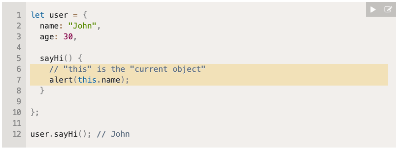
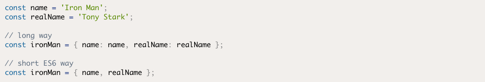
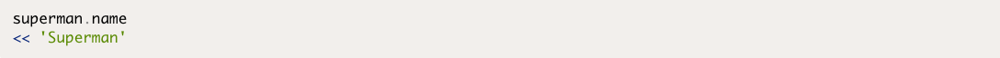
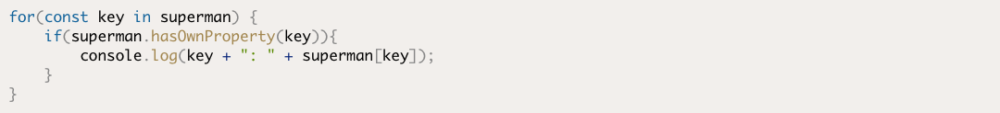
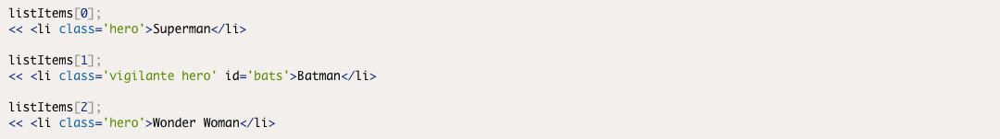
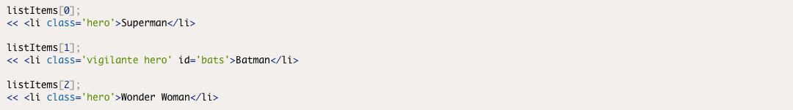
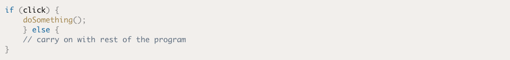
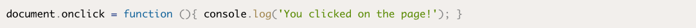
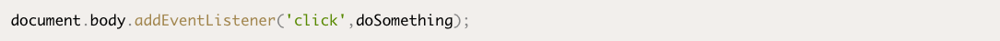

Readings
Object methods, "this"
It’s common that an object method needs to access the information stored in the object to do its job. For instance, the code inside user.sayHi() may need the name of the user. To access the object, a method can use the this keyword. The value of this is the object “before dot”, the one used to call the method.
Ch5: Objects
An object in JavaScript is a self-contained set of related values and functions. They act as a collection of named properties that map to any JavaScript value such as strings, numbers, booleans, arrays and functions. If a property’s value is a function, it is known as amethod.
To create an object literal, simply enter a pair of curly braces. The following example creates an empty object that is assigned to the variable spiderman:
You can access the properties of an object using the dot notation that we’ve already seen in previous chapters. This will return the value of that property, as can be seen in the example below:
Finding all the Properties of an Object
In this example, we create a variable called key . We then iterate over the properties of the superman object and use key to log the property name and superman[key] to look up the value of each property.
Ch6: Document Object Model
The Document Object Model, or DOM for short, represents an HTML document as a network of connected nodes that form a tree-like structure.
The DOM treats everything on a web page as a node. HTML tags, the text inside these tags, even the attributes of a tag are all nodes. The HTML tag is the root node, and every other part of the document is a child node of this.
Getting Elements
The DOM provides several methods that allow us to access any element on a page. These methods will return a node object or a node list, which is an array-like object. These objects can then be assigned to a variable and be inspected or modified.
The getElementById() method does exactly what it says on the tin. It returns a reference to the element with a unique id attribute that is given as an argument. For example, we can get a reference to the
heading element with the id of 'title' in the 'heroes.html' page by writing this in the console:
getElementsByTagName() will return a live node list of all the elements with the tag name that is provided as an argument. For example, we can get all the list items (HTML tag of li in the document using this code:
 

getElementsByClassName() will return a live node list of all elements that have the class name that is supplied as an argument. For example, we can return a collection of all elements with the class of 'hero' using the following code:
Ch7: Events
Imagine you’re waiting for a really important email that you need to act upon as soon as it arrives, but you also have some JavaScript programming to do. You could keep checking your email every couple of minutes to see if the message has arrived, but this will cause lots of interruptions to your progress creating the next killer app. Not to mention you might be unable to check your email at the exact moment the message arrives, so it might be too late to act upon. The obvious answer is to set up a notification that will pop up as soon as the email arrives. You can happily program away without the distraction of constantly checking your email, because you'll receive a satisfying 'ping' as soon as the email arrives.
Event listeners in JavaScript work in much the same way. They are like setting a notification to alert you when something happens. Instead of the program having to constantly check to see if an event has occurred, the event listener will let it know when the event happens, and the program can then respond appropriately. This allows the program to continue with other tasks while it waits for the event to happen.
  